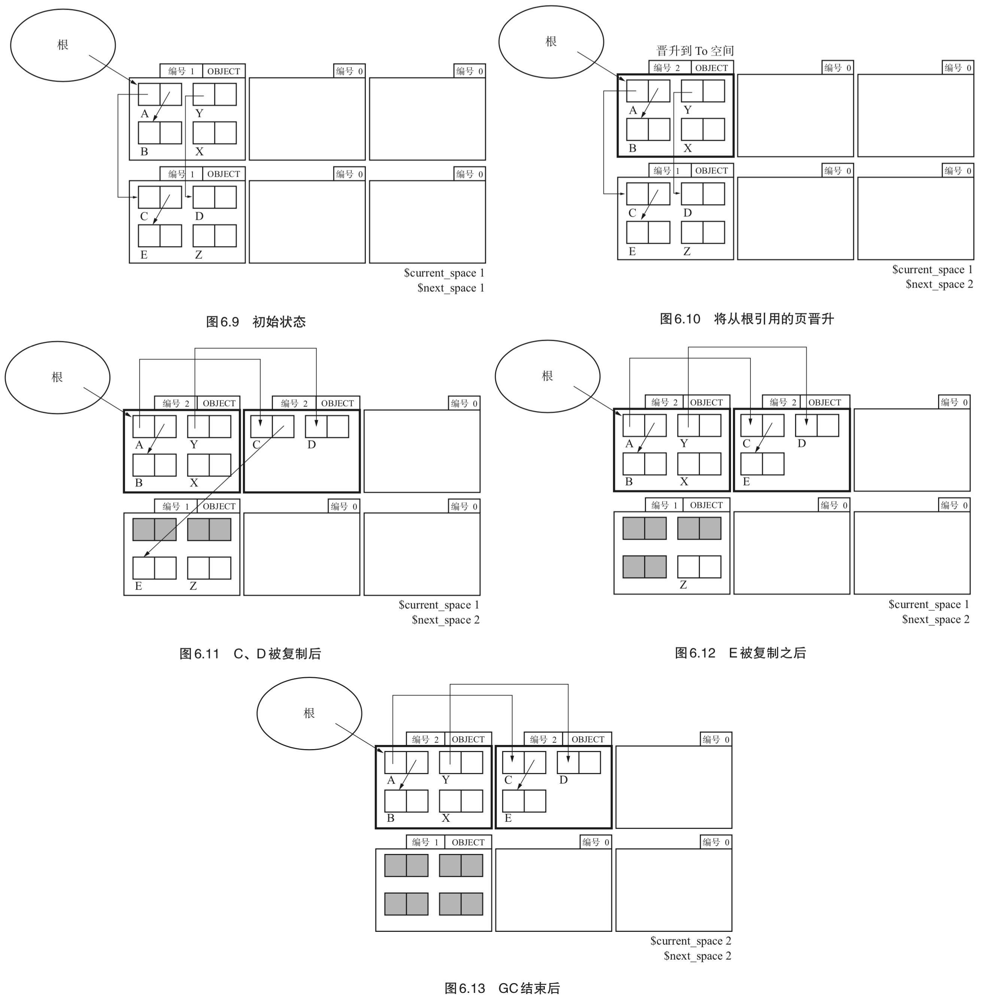
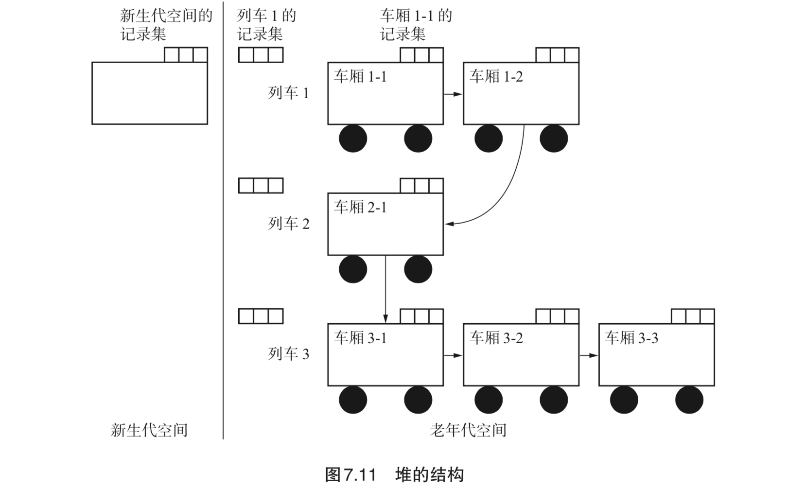
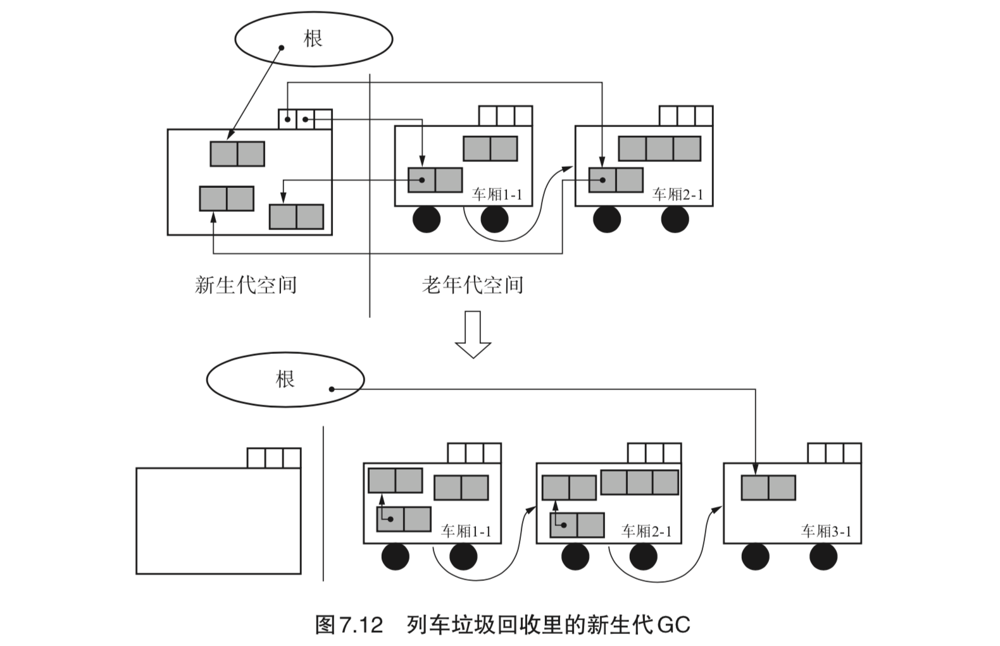
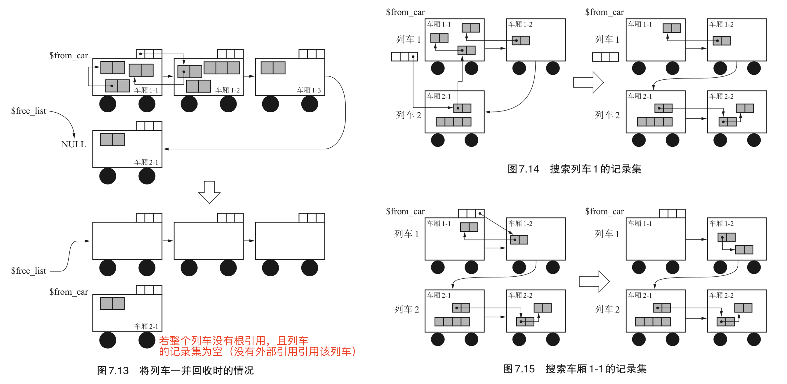
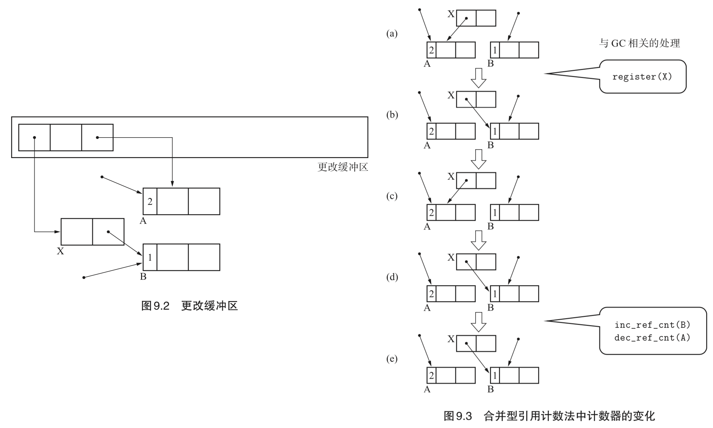

《垃圾回收算法与实现》读书笔记（第 6-9 章）
书接上回，第 6-9 章的笔记。
Chapter 6：保守式 GC（Conservative GC）
为了实现某一个 GC 算法，需要首先选择 GC 的种类。这里的种类指的是 “保守式 GC” 和 “准确式 GC”。其中，“保守式 GC” 指的是 “不能识别指针和非指针的 GC”。
- Page 120不明确的根（root）：
- 无法区分存储在下述位置的值是否为指针：
- 寄存器；
- 调用栈；
- 全局变量空间（.data）。
- 因此保守式 GC 仅遵循 GC 的基本原则 —— “不废弃活动对象”。对于非活动对象，在某些情况下可能不会被回收。
- Page 120保守式 GC 在检查不明确的根时进行的基本项目：
- 是不是被正确对齐的值？（如在 64 位 CPU 的情况下，为 8 的倍数）；
- 是不是指着堆内？
- 是不是指着堆内某个对象的开头？
- Page 122保守式 GC 的优缺点：
- 优点：语言处理程序不依赖于 GC。
- 缺点：
- 识别指针和非指针需要付出成本；
- 错误识别指针会压迫堆；
- 能够使用的 GC 算法有限（比如无法使用 GC 复制算法，因此这些算法会将根的值重写到新空间，可能会把非指针重写）；
- Page 123准确式 GC：能正确识别指针和非指针的 GC。
- 实现上需要语言处理程序的支持；
- 一些创建正确根的方法：
- 打标签：利用“编译器默认生成对齐地址引用”这一条件，使用地址的低 1 位作为标签（对整数打标签，比如“左移，最后一位置一”。这样 LSB 位为 0 的数值便一定为指针）。
- 不把寄存器和栈等当做根：在处理程序的专门位置创建根。
- 优点：堆里只会留下活动对象；
- 缺点：语言处理程序必须对 GC 进行一些支援。
- Page 125间接引用：可解决保守式 GC 无法使用“复制算法”的问题。

- 算法思路：经由“句柄”来间接地处理对象。在移动引用的对象时，只需修改句柄里的指针，而无需修改原本的引用值；
- 缺点：因为必须将所有对象都间接引用，因此会拉低访问对象内数据的速度，而这会关系到整个语言处理程序的速度。
- Page 127MostlyCopyingGC：保守式 GC 复制算法，可在不明确的根的环境中运行 GC 复制算法。思路是：把那些不明确的根指向的对象以外的对象都复制的 GC 算法。MostlyCopyingGC 会抛开那些不能移动的对象，而将其他“大部分”的对象都进行复制。
- 前提条件：
- 根是不明确的根；
- 没有不明确的数据结构（GC 能够明确判断对象里的域是指针还是非指针）；
- 对象大小随意。
- GC 执行步骤：
- 首先对 next_space 的值进行增量（GC 开始）；
- 将保留有从根引用的对象的页“晋升”到 To 页（将页编号设定为 next_space 的值）。连续的跨页（CONTINUED）将被一起晋升；
- 复制过程产生的新页默认被设定为 next_space 的值（To 页）；
- 将 To 页里对象的子对象复制到 To 页的分块；
- 将 current_space 的值设定为 next_space。

- 实现细节：
- 堆被分成一定大小的页，每个页各有一个编号；
- 两个变量 current_space（From）与 next_space（To）用于识别 From 页与 To 页；
- 正在使用的页有两种标志：
- OBJECT：正在使用的页；
- CONTINUED：当正在使用的页跨页时，设置在第2个页之后。
- 在分配新页时，当 “正在使用的页 + 准备追加的页 >= 堆总页的一半”，则会启动 GC；
- 页的合适大小在 512 字节。
- 优点：可以在保守式 GC 中使用 GC 复制算法；
- 缺点：不会回收包含有从根指向的对象，一定程度上降低了内存的使用率。可以通过适当缩小页（让非根指针尽量分配在其他页，可以被回收）来调节。
- Page 139黑名单：可改善“指针错误识别”的问题。
- 是一种创建“需要注意的地址的名单”的方法。名单中记录的是“不明确的根内的非指针，其指向的是有可能被分配对象的地址（比如堆内未使用对象的地址）”；
- 在将对象分配到需要注意的地址时，所分配对象有着如下限制条件：
- 小对象；
- 没有子对象的对象。
- 以“GC 标记-清除”为例，黑名单在“标记”阶段创建。
// 伪代码。若该对象地址未曾使用过，则将其加入黑名单；
if (!is_used_object(obj))
obj.next = $blacklist
$blacklist = obj
Chapter 7：分代垃圾回收（Generational GC）
即在对象中引入了“年龄”的概念，通过优先回收容易成为垃圾的对象，提高垃圾回收的效率。这基于一个总结出的经验：“大部分对象在生成后马上就变成了垃圾，很少有对象能活得很久。”
- Page 143分代：
- 刚生成的对象称为“新生代对象”，到达一定年龄的对象则称为“老年代对象”。对新对象执行的 GC 称为“新生代 GC”（minor GC），对老对象执行的 GC 称为“老年代 GC”（major GC）。新生代对象上升为老年代对象的情况称为“晋升”；
- 新生代 GC 执行频率较高，老年代 GC 执行频率较低。
- Page 143Ungar 的分代垃圾回收：
- 堆结构：

- 论文中，对各空间大小的设定：
- 生成空间（用于生成新对象，满时发生 GC）：140KB；
- 幸存空间（用作 From 与 To 空间）：28KB；
- 老年代空间：940KB。
- 实现细节：
- 记录集（remembered set）：记录了从老年代对象到新生代对象的引用。这部分引用也需要被当作根进行处理（用于搜索新生代的活动对象，每次新生代 GC 时创建。可以简化更新父子指针的复杂度）；
- 对象头结构：
- 对象的年龄（age）：从新生代 GC 中存活下来的次数；
- 已经复制完毕的标志（forwarded）；
- 已经向记录集记录完毕的标志（remembered）；
- forwarding 指针；
- 对象的种类；
- 对象的大小。
- 新生代 GC：当生成空间满时启动。GC 过程会将生成空间中的活动对象复制到 To 幸存空间。同时，From 空间内的活动对象也会被复制到 To 幸存空间。

- 老年代 GC：老年代空间占满后触发。可通过 GC 标记-清除进行；
- 从一定次数的新生代 GC 中存活下来的对象会被到晋升，被复制到老年代空间中；
- 利用“写入屏障”将老年代对象记录到记录集中。三个条件：
- 发出引用的对象是不是老年代对象；
- 指针更新后的引用的目标对象是不是新生代对象；
- 发出引用的对象还没有被记录到记录集中。
A write barrier in a garbage collector is a fragment of code emitted by the compiler immediately before every store operation to ensure that (e.g.) generational invariants are maintained.
- 对于无法被分配到生成空间的大对象，可以选择将其直接分配到老年代空间；
- 优点：可改善 GC 花费的时间。据实验表明，由于只将垃圾回收的重点放在新生代对象身上，因此分代垃圾回收花费的时间是 GC 复制算法的 1/4；
- 缺点：对于对象会活得很久的程序来说，会产生以下问题：
- 新生代 GC 花费的时间增多；
- 老年代 GC 频繁运行。
- 总结：只有当新生代 GC 带来的速度提升效果大于写入屏障对速度造成的影响时，分代垃圾回收才能够更好地发挥作用。
- Page 154一些可以替代“记录集”的方式（标记需要遍历的某一块老年代空间）：
- 卡片标记：将老年代空间按照相等大小（论文中为 128 字节）分割成若干“卡片”，通过额外的“标记表格”来管理各个卡片内的的对象引用。GC 时会寻找标记表格。当找到设置了标志位的卡片时，就会从卡片开头开始寻找指向新生代空间的引用。因此整个位表只需要老年代空间的 1/1024 的空间即可；
- 页面标记：利用 OS 的机制，当对堆内的某一个页面进行写入操作时，OS 会设置跟这个页面对应的位。或利用 OS 的内存保护功能，在 mutator 写入老年代空间时，通过异常处理来检测出这项操作。而在异常处理函数的内部，事先设置与发生写入页面相对应的位。这种方法可能导致额外的遍历页面。
- Page 156多代垃圾回收：可以相对减少在老年代对象上消耗的垃圾回收时间。除了最老的那一代之外，每代都有一个记录集。X 代的记录集只记录来自比 X 老的其他代的引用。综合来看，少设置一些分代能得到更优秀的吞吐量，据说分为 2 代或者 3 代是最好的。
- Page 157列车垃圾回收（Train GC）：为了在分代垃圾回收中利用老年代 GC 而采用的算法，可以控制老年代 GC 中暂停时间的增长。
- 堆结构：

- 实现细节：
- 老年代空间按一定大小划分，每个划分出来的空间称为车厢。每个列车和每个车厢都按其产生顺序被赋予编号，互相连接。1 次老年代 GC 是以 1 个车厢作为 GC 对象的；
- 列车的记录集里记录的是来自其他列车的引用，车厢的记录集中记录的则是来自同一列车的其他车厢的引用（均是老年代对象）；
- 对象结构和在 Ungar 的分代垃圾回收里用到的对象结构完全一致；
- 新生代 GC：新生代空间满时执行。会把根或者老年代对象引用的新生代对象复制到老年代空间里去；
- 新生代空间记录集中由老年代空间引用的对象，会被复制到老年代空间对象所属“列车”的最后一节车厢中。

- 老年代 GC：新生代 GC 结束后执行。以开头列车的开头车厢作为 GC 对象开始，将该对象所在车厢里的活动对象复制到其他车厢。
- 若当前列车所有车厢没有根引用，且该车厢记录集为空，则直接回收整个列车；
- 否则，复制的目标车厢为“发出引用的对象所属列车最末尾的车厢”。若该车厢装不下这些对象，则新连接一节空车厢。

- 若新生代空间的记录集满了，则必须执行新生代 GC 以清空新生代空间；若老年代空间中某个车厢的记录集满了，则可选择将该车厢排除到 GC 对象之外（类似永生对象）。
- 优点：
- 缩减了各老年代 GC 造成的 mutator 最大暂停时间；
- 可回收循环的大型垃圾（要复制的对象与发出引用的对象被安排在同一辆“列车”上）。
- 缺点：写入屏障成本更高，吞吐量方面较 Ungar 算法低。
Chapter 8：增量式垃圾回收（Incremental GC）
是将 GC 和 mutator 一点点交替运行的手法，GC 的执行不会导致 mutator 的暂停。“停止型 GC（Stop-The-World-GC）” 与 “增量式 GC”。
- Page 168增量式 GC 标记-清除算法：
- 三色标记：将 GC 中的对象按照各自的情况分为三种；
- 白色：还未搜索过的对象；
- 灰色：正在搜索的对象（在栈中）；
- 黑色：搜索完成的对象（已出栈）。
- 实现流程：
- GC 开始运行前所有的对象都是白色。
- 根查找阶段（执行一次）：把能直接从根引用的对象涂成灰色，然后堆到栈里；
- 标记阶段（执行多次）：查找（取出）栈中的灰色对象，将其子对象也涂成灰色，查找结束后将灰色对象涂成黑色；
- 清除阶段（执行多次）：查找堆，将白色对象连接到空闲链表，将黑色对象变回白色。
- 实现细节：
- 在增量标记阶段，每次只从栈中取出一定数量（MARK_MAX）的对象进行标记。当标记完特定数量的对象后，mutator 继续执行；
- 在增量清除阶段，每次只清除一定个数，然后中断 GC，再次运行 mutator。
- 写入屏障：用于在更新对象引用时检查其标记情况。
- 优点：缩短最大暂停时间；
- 缺点：降低了吞吐量（使用了“写入屏障”）。
- Page 174Steele 算法：
- 三色标记：
- 白色：还未搜索过的对象；
- 灰色：正在搜索的对象（在栈中，未标记）；
- 黑色：搜索完成的对象（已出栈，设置了标记位）。
- 实现细节：
- 写入屏障：对发出引用的对象进行标记。通过限制标记对象来减少被标记的对象，从而防止了因疏忽造成垃圾残留的后果。
// 伪代码；
write_barrier(obj, field, newobj) {
if (
$gc_phase == GC_MARK &&
obj.mark == TRUE &&
newobj.mark == FALSE
) {
obj.mark = FALSE // 将当前对象标记为“灰色”；
push(obj, $mark_stack) // 重新搜索；
}
*field = newobj
}
- Page 176汤浅的算法（又名“快照 GC”）：
- 原则：以 GC 开始时对象间的引用关系为基础。在 GC 开始时回收垃圾，保留 GC 开始时的活动对象和 GC 执行过程中被分配的对象；
- 进入清除阶段前不会再搜索根（incremental_mark_phase 过程较为简单）。
Chapter 9： RC Immix 算法
- Page 180RC Immix 算法（合并型引用计数法 + Immix 算法）将引用计数法的一大缺点 — “吞吐量低”（由于引用计数频繁变化引起），改善到了实用级别。
- Page 181合并型引用计数法：将注意力放在某一时期最初和最后的状态上，在该期间内不进行计数器的增减。指针改动时的信息（对象和其子对象）会被注册到“更改缓冲区”（Modified Buffer）。当更改缓冲区满时，执行 GC 查找更改缓冲区，并正确设置计数器的值。

- 优点：增加了吞吐量；
- 缺点：增加了 mutator 的暂停时间。
- Page 185RC Immix 算法：
- 算法细节：
- 对象有计数器，线也有计数器，这样就可以获悉线内是否存在活动对象。对象的计数器表示的是指向这个对象的引用的数量，而线的计数器表示的是这个线里存在的活动对象的数量（对象生成和废弃的频率要低于对象间引用关系变化的频率）。
- 优点：吞吐量得到了大幅改善；
- 缺点：暂停时间增长。